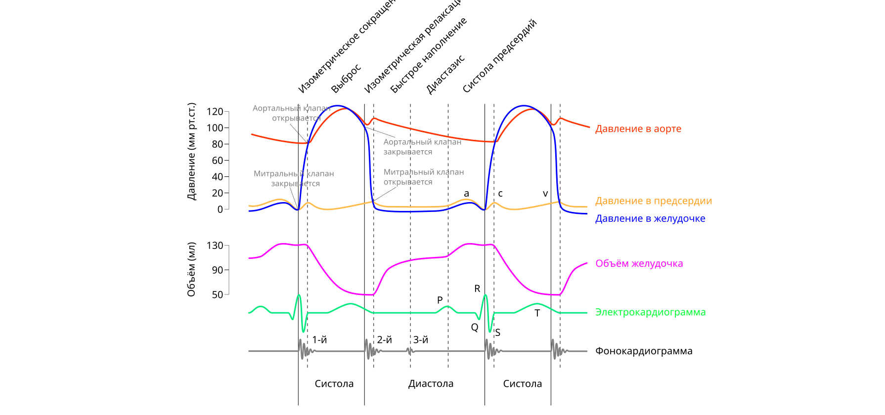
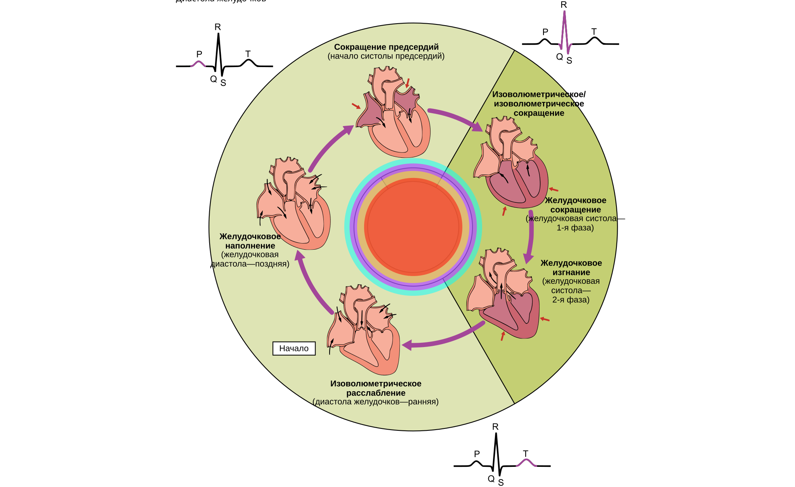

Сердце: цикл, выброс и регуляция
Насосная функция сердца и требования организмов к системе кровообращения
В многоклеточном организме млекопитающего диффузия не способна обеспечить быструю доставку кислорода, питательных веществ и удаление продуктов метаболизма. Согласно закону Фика, время диффузии пропорционально квадрату расстояния. Если на дистанции 10 мкм молекула кислорода диффундирует за несколько миллисекунд, то для преодоления расстояния в несколько сантиметров потребовались бы дни. Для решения этой проблемы эволюция сформировала систему конвективного транспорта — систему кровообращения, в которой жидкость перемещается под действием градиента гидростатического давления. Роль гидродинамического насоса, создающего этот градиент, выполняет сердце.[1, с. ?]

Организм предъявляет к сердечному насосу ряд жестких физиологических требований:
- Непрерывность и однонаправленность кровотока: несмотря на то, что работа самого сердца носит циклический (пульсирующий) характер, кровоток в капиллярах должен оставаться непрерывным. Это достигается за счет превращения пульсирующего выброса в постоянный поток благодаря эластической емкости аорты и крупных артерий (эффект компрессионной камеры, или Windkessel-эффект), а также благодаря клапанному аппарату, предотвращающему обратный ток крови.
- Создание двух раздельных контуров давления: сердечный насос разделен на две параллельно функционирующие, но последовательно соединенные части. Левый желудочек нагнетает кровь в большой круг кровообращения под высоким давлением (систолическое давление 120 мм рт. ст., диастолическое 80 мм рт. ст.), обеспечивая преодоление высокого системного сосудистого сопротивления. Правый желудочек прокачивает тот же объем крови через малый круг кровообращения под низким давлением (систолическое 25 мм рт. ст., диастолическое 10 мм рт. ст.), что предотвращает фильтрацию жидкости в альвеолы и развитие отека легких.
- Высокая пластичность и срочная адаптация: насос должен мгновенно изменять объемную скорость кровотока в соответствии с метаболическими потребностями тканей. У здорового человека минутный объем кровотока (МОК) в покое составляет около 5 л/мин, а при предельной физической нагрузке может возрастать до 25–30 л/мин.
Автоматизм и проводящая система сердца
Сердце обладает свойством автоматизма — способностью генерировать ритмические импульсы возбуждения без участия внешних нервных или гуморальных стимулов. Источником автоматизма служат специализированные атипичные кардиомиоциты, формирующие проводящую систему сердца.[2, с. ?]

Иерархическая структура проводящей системы включает в себя:
- Синоатриальный (СА) узел: расположен в стенке правого предсердия у места впадения верхней полой вены. Является пейсмекером (водителем ритма) первого порядка и генерирует импульсы с частотой 60–80 имп/мин.
- Атриовентрикулярный (АВ) узел: лежит в нижней части межпредсердной перегородки. Это пейсмекер второго порядка (частота 40–50 имп/мин). Главная функция АВ-узла — задержка проведения импульса на 40–50 мс, что обеспечивает последовательное сокращение предсердий и желудочков. Кроме того, АВ-узел выполняет фильтрующую роль, лимитируя максимальную частоту импульсов, проводимых к желудочкам.
- Пучок Гиса, его ножки и волокна Пуркинье: пейсмекеры третьего порядка. Проводят возбуждение по желудочкам с высокой скоростью (до 2–4 м/с), гарантируя почти одновременный (синхронный) охват возбуждением миокарда желудочков. Собственная частота автоматизма волокон Пуркинье составляет всего 15–40 имп/мин.
В норме нижележащие центры автоматизма подавляются более высокой частотой СА-узла — явление, известное как овердрайв-подавление (overdrive suppression).
Ионные механизмы потенциала действия пейсмекерных клеток
Клетки синоатриального узла не имеют стабильного потенциала покоя. В фазу диастолы их мембранный потенциал постепенно смещается от максимального диастолического потенциала (около -60 мВ) в сторону деполяризации до порогового уровня (около -40 мВ). Этот процесс называется медленной диастолической деполяризацией (МДД) или пейсмекерным потенциалом.
МДД обеспечивается последовательной активацией трех ключевых ионных токов:
- Ток If (funny current): активируется при гиперполяризации мембраны ниже -40...-50 мВ в конце реполяризации. Этот входящий натриевый ток проходит через HCN-каналы (Hyperpolarization-activated Cyclic Nucleotide-gated channels). Смещение потенциала в положительную сторону — прямая заслуга If.
- Снижение выходящего калиевого тока (IK): во время диастолы калиевые каналы постепенно закрываются, уменьшая утечку позитивных ионов из клетки.
- Входящий кальциевый ток T-типа (ICa,T): при достижении потенциала около -50 мВ открываются низкопороговые кальциевые каналы T-типа (transient), обеспечивающие доведение потенциала до критического уровня -40 мВ.
При достижении -40 мВ генерируется истинный потенциал действия (фаза 0). В отличие от рабочих кардиомиоцитов, фаза 0 пейсмекера обусловлена не натриевым током, а медленным входящим кальциевым током через каналы L-типа (ICa,L). Амплитуда потенциала действия составляет около 70 мВ, пик достигает +10...+15 мВ. Реполяризация (фаза 3) развивается вследствие инактивации ICa,L и выхода K+ из клетки через каналы IK. После возвращения потенциала к -60 мВ цикл МДД возобновляется.
Потенциал действия рабочего кардиомиоцита
Сократительный (рабочий) кардиомиоцит обладает стабильным потенциалом покоя на уровне -90 мВ, который поддерживается высокой проницаемостью мембраны для ионов калия через каналы аномального выпрямления (IK1). График потенциала действия состоит из пяти фаз:
- Фаза 0 (быстрая деполяризация)
- Возникает при приходе импульса возбуждения. Открываются быстрые потенциалзависимые натриевые каналы (INa). Натрий лавинообразно входит в клетку, смещая потенциал от -90 мВ до +30 мВ за 1–2 мс.
- Фаза 1 (начальная быстрая реполяризация)
- Быстрая инактивация натриевых каналов и кратковременный выход ионов калия через быстро активирующиеся калиевые каналы (Ito — transient outward) приводят к небольшому снижению потенциала до 0 мВ.
- Фаза 2 (плато)
- Уникальная черта сердечной мышцы, продолжающаяся 150–250 мс. В эту фазу устанавливается равновесие между входящим кальциевым током через потенциалзависимые каналы L-типа (ICa,L) и выходящим калиевым током (IKr и IKs). Вход Ca2+ на фазе плато крайне важен для запуска сокращения.
- Фаза 3 (конечная быстрая реполяризация)
- Кальциевые каналы L-типа инактивируются, а выходящие калиевые токи (IKr, IKs, а затем и IK1) достигают максимума. Выход K+ возвращает мембранный потенциал к -90 мВ.
- Фаза 4 (потенциал покоя)
- Восстановление исходных ионных концентраций внутри и снаружи клетки с помощью Na+/K+-АТФазы и Na+/Ca2+-обменника.
Длительная фаза плато определяет продолжительный абсолютный рефрактерный период миокарда (около 200–250 мс), во время которого клетка неспособна ответить на новый стимул. Это делает невозможной тетаническую судорогу сердечной мышцы и обеспечивает ее работу исключительно в режиме одиночных сокращений.
Сопряжение возбуждения и сокращения в миокарде
Перевод электрического сигнала (потенциала действия) в механическую работу сокращения называется сопряжением возбуждения и сокращения. Центральным медиатором этого процесса выступает ион кальция (Ca2+).[3, с. ?]
В рабочих кардиомиоцитах плазматическая мембрана образует глубокие впячивания — Т-трубочки, которые подходят к цистернам саркоплазматического ретикулума (СР), формируя диады. Когда потенциал действия распространяется по Т-трубочке, деполяризация активирует потенциалзависимые кальциевые каналы L-типа (дигидропиридиновые рецепторы, Cav1.2). Кальций из внеклеточного пространства входит в саркоплазму.
Однако внеклеточного кальция недостаточно для активации миофибрилл. Вход Ca2+ через L-каналы служит лишь сигналом для открытия рианодиновых рецепторов 2-го типа (RyR2), расположенных на мембране саркоплазматического ретикулума. Этот механизм носит название кальций-индуцированного высвобождения кальция (Calcium-Induced Calcium Release, CICR). Выход Ca2+ из СР увеличивает его концентрацию в цитозоле с 10-7 ммоль/л (в покое) до 10-5 ммоль/л.
Свободный кальций связывается с тропонином C (TnC). Это вызывает конформационную перестройку тропонинового комплекса (включающего также TnI и TnT): тропомиозин смещается в глубь желобка актинового филамента, открывая на актине участки связывания для головок миозина. Головки миозина взаимодействуют с актином, расщепляют АТФ и совершают гребковое движение, протягивая тонкие филаменты вдоль толстых. Происходит укорочение саркомера.
Для наступления расслабления (лузитропии) необходимо снизить концентрацию Ca2+ в цитозоле до исходного уровня. Это достигается за счет четырех транспортных систем:
- SERCA2a (сарко-эндоплазматический Ca2+-АТФаза): перекачивает около 70–80% кальция обратно в саркоплазматический ретикулум. Активность SERCA2a регулируется белком фосфоламбаном (PLB). В нефосфорилированном состоянии фосфоламбан тормозит SERCA2a; при стимуляции симпатической нервной системы фосфоламбан фосфорилируется протеинкиназой А, торможение снимается, и скорость расслабления миокарда возрастает.
- Na+/Ca2+-обменник (NCX): удаляет из клетки около 15–20% кальция, обменивая 1 ион Ca2+, выводимый наружу, на 3 иона Na+, вводимых в клетку (вторично-активный транспорт).
- Са-АТФаза плазмалеммы (PMCA) и митохондриальный Ca-унипортер: выводят оставшиеся 1–5% кальция.
Сердечный цикл по фазам с давлениями в камерах и объёмами
Сердечный цикл — это период от одного сокращения сердца до другого. При частоте сердечных сокращений 75 имп/мин длительность одного цикла составляет 0,8 с. Сердечный цикл делится на систолу (сокращение и изгнание) и диастолу (расслабление и наполнение).[4, с. ?]

Детально в работе левого желудочка выделяют 7 последовательных фаз:
- Систола предсердий (0,10 с): завершает наполнение желудочков. Давление в предсердии повышается до 4–8 мм рт. ст., придавливая дополнительный объем крови в левый желудочек (прирост наполнения на 15–30%). Объем крови в желудочке в конце этой фазы достигает конечного диастолического объема (КДО), составляющего 120–130 мл.
- Фаза изометрического (изоволемического) сокращения (0,05 с): начинается с закрытия митрального клапана, возникающего, когда давление в желудочке превышает давление в предсердии. Все клапаны сердца закрыты. Сокращение миокарда приводит к резкому росту давления в левом желудочке от 8 до 80 мм рт. ст. Поскольку жидкость несжимаема, объем крови в желудочке остается строго постоянным (КДО = 120 мл).
- Фаза быстрого изгнания (0,10 с): когда давление в левом желудочке превышает давление в аорте (80 мм рт. ст.), открывается аортальный клапан. Кровь стремительно поступает в аорту. Давление в левом желудочке и аорте достигает своего систолического максимума — 120 мм рт. ст.
- Фаза медленного изгнания (0,15 с): прирост давления прекращается, миокард начинает расслабляться, давление в желудочке и аорте плавно снижается до 100 мм рт. ст. К концу фазы изгнания в желудочке остается конечный систолический объем (КСО), равный 50–60 мл. Объем вытолкнутой крови составляет ударный объем (УО = КДО - КСО = 70 мл).
- Фаза изометрического (изоволемического) расслабления (0,06–0,08 с): как только давление в желудочке становится ниже давления в аорте, аортальный клапан захлопывается. Все клапаны снова закрыты. Миокард расслабляется, давление в левом желудочке стремительно падает от 100 мм рт. ст. почти до 0–5 мм рт. ст. Объем не меняется и равен КСО (50 мл).
- Фаза быстрого пассивного наполнения (0,09 с): давление в желудочке становится ниже давления в левом предсердии, что приводит к открытию митрального клапана. Кровь, накопившаяся в предсердии за время систолы желудочков, под действием градиента давления устремляется в желудочек, быстро заполняя его на 60–70%.
- Фаза медленного пассивного наполнения / диастазис (0,16 с): градиент давлений между предсердием и желудочком выравнивается, наполнение резко замедляется. Кровь течет транзитом из полых/легочных вен через предсердия в желудочки.
| Фаза сердечного цикла | Длительность (с) | Состояние митрального клапана | Состояние аортального клапана | Давление в левом желудочке (мм рт. ст.) | Объем левого желудочка (мл) |
|---|---|---|---|---|---|
| Систола предсердий | 0,10 | Открыт | Закрыт | 4 → 8 | 110 → 120 (КДО) |
| Изометрическое сокращение | 0,05 | Закрыт | Закрыт | 8 → 80 | 120 (КДО) |
| Быстрое изгнание | 0,10 | Закрыт | Открыт | 80 → 120 | 120 → 70 |
| Медленное изгнание | 0,15 | Закрыт | Открыт | 120 → 100 | 70 → 50 (КСО) |
| Изометрическое расслабление | 0,08 | Закрыт | Закрыт | 100 → 5 | 50 (КСО) |
| Быстрое наполнение | 0,09 | Открыт | Закрыт | 5 → 2 | 50 → 100 |
| Медленное наполнение (диастазис) | 0,16 | Открыт | Закрыт | 2 → 4 | 100 → 110 |
Тоны сердца и их происхождение
При механической работе сердца возникают звуковые колебания, называемые тонами сердца. В норме аускультативно выслушиваются два основных тона, а при графической регистрации (фонокардиографии) могут определяться четыре.[5, с. ?]
- Первый тон (S1, систолический): возникает в самом начале систолы желудочков (в фазу изометрического сокращения). Основной компонент S1 — колебания створчатых клапанов (митрального и трикуспидального) при их закрытии. Дополнительный вклад вносят вибрация стенок желудочков и напряжение сухожильных нитей. S1 более низкий по частоте (30–100 Гц) и более продолжительный (0,14 с). Он совпадает по времени с зубцом R на ЭКГ и пульсовым толчком на сонной артерии.
- Второй тон (S2, диастолический): возникает в начале диастолы при захлопывании полулунных клапанов (аортального и клапана легочной артерии). Второй тон высокочастотный (50–150 Гц), более короткий (0,11 с) и резко обрывается. На ЭКГ он совпадает с концом зубца T. Во время вдоха из-за снижения внутригрудного давления приток крови к правому сердцу возрастает, что удлиняет изгнание из правого желудочка: клапан легочной артерии закрывается позже аортального — наблюдается физиологическое расщепление S2.
- Третий тон (S3): обусловлен вибрацией стенок желудочков в фазу быстрого пассивного наполнения. Он выслушивается в раннюю диастолу (через 0,12–0,18 с после S2), имеет очень низкую частоту и считается физиологической нормой у детей и молодых спортсменов.
- Четвертый тон (S4): пресистолический тон, возникающий во время систолы предсердий. Он связан с быстрым вгонянием крови предсердием в малорастяжимый, жесткий желудочек. У взрослых наличие S4 практически всегда указывает на патологическое снижение комплаенса (растяжимости) миокарда.
Петля «давление — объём» и работа сердца
Для комплексного анализа механической работы и сократимости левого желудочка в физиологии используют петлю «давление — объём» (Pressure-Volume Loop). Эта диаграмма строится в координатах: по оси абсцисс (X) — объем левого желудочка (мл), по оси ординат (Y) — давление в левом желудочке (мм рт. ст.).[6, с. ?]
Петля образует замкнутый контур с четырьмя критическими точками:
- Точка A (открытие митрального клапана): объем равен КСО (50 мл), давление упало до минимального значения (~5 мм рт. ст.).
- Отрезок AB (фаза наполнения): объем увеличивается от КСО (50 мл) до КДО (120 мл). График идет вдоль кривой пассивного диастолического наполнения (EDPVR — End-Diastolic Pressure-Volume Relationship). Давление слегка поднимается до 8–10 мм рт. ст.
- Точка B (закрытие митрального клапана): конец диастолы. Достигнут КДО (120 мл).
- Отрезок BC (изометрическое сокращение): вертикальный отрезок. Объем строго фиксирован (120 мл), давление взлетает от 10 до 80 мм рт. ст.
- Точка C (открытие аортального клапана): давление превысило диастолическое давление в аорте (80 мм рт. ст.).
- Отрезок CD (фаза изгнания): объем уменьшается от 120 мл до 50 мл. Давление сначала повышается до систолического пика (120 мм рт. ст.), затем снижается до 100 мм рт. ст. Верхний угол диаграммы (точка D) лежит на линии максимального систолического давления (ESPVR — End-Systolic Pressure-Volume Relationship), наклон которой характеризует инотропное состояние (сократимость) миокарда.
- Точка D (закрытие аортального клапана): конец систолы. В желудочке остается КСО (50 мл), давление около 100 мм рт. ст.
- Отрезок DA (изометрическое расслабление): вертикальный отрезок вниз. Объем неизменен (50 мл), давление падает с 100 мм рт. ст. до 5 мм рт. ст.
Ширина петли по оси X равна ударному объему (УО = КДО - КСО = 120 - 50 = 70 мл). Площадь, ограниченная петлей «давление — объём», представляет собой внешнюю ударную работу (Stroke Work, SW) левого желудочка за один сердечный цикл. Математически она равна интегралу давления по объему:
SW = ∫ P dV
Полные энергозатраты сердца складываются из этой внешней работы и потенциальной энергии напряжения стенки желудочка, затрачиваемой на преодоление сопротивления изгнанию (постнагрузки).
Преднагрузка и закон Франка-Старлинга, длина саркомера
Преднагрузка представляет собой степень механического растяжения миокардиальных волокон перед началом их сокращения. В условиях целостного организма исходная длина кардиомиоцитов определяется объёмом крови, заполняющим желудочек в самый конец диастолы. Этот показатель носит название конечно-диастолического объёма (КДО). Поскольку непосредственное измерение длины кардиомиоцитов in vivo затруднено, на практике о преднагрузке судят либо по КДО, либо по конечно-диастолическому давлению (КДД) в полости желудочка, связанному с объёмом через показатель податливости (комплаенса) миокарда.[7, с. ?]
Фундаментальным механизмом авторегуляции силы сердечных сокращений является закон сердца Франка-Старлинга. Он формулируется следующим образом: в физиологических пределах сила сокращения миокарда и связанный с ней ударный объём прямо пропорциональны исходной длине кардиомиоцитов перед началом систолы. Чем больше венозный возврат и, соответственно, КДО, тем сильнее растягивается стенка желудочка и тем больший объём крови изгоняется в артериальное русло во время последующей систолы.
Молекулярно-клеточная основа закона Франка-Старлинга кроется в структурной организации саркомера — элементарной сократительной единицы кардиомиоцита. В покое (в диастолу) длина саркомера составляет в среднем от 1,8 до 1,9 мкм. При пассивном наполнении желудочка кровью саркомеры растягиваются до оптимальной длины, равной 2,2 мкм. Молекулярный механизм зависимости «длина — напряжение» включает два ключевых элемента:
- Оптимизация степени перекрытия нитей: При удлинении саркомера от 1,8 мкм до 2,2 мкм тонкие актиновые и толстые миозиновые филаменты смещаются относительно друг друга в положение, при котором максимальное количество миозиновых головок получает возможность связываться с активными центрами актина. При длине саркомера менее 1,8 мкм противоположные концы актиновых нитей начинают перекрываться в центре саркомера (в зоне M-линии), что пространственно препятствует образованию актино-миозиновых мостиков.
- Длинозависимая активация миофиламентов (чувствительность к кальцию): Растяжение саркомера снижает межфибриллярное расстояние (поперечный интервал между актином и миозином уменьшается за счёт возникновения бокового натяжения). Это облегчает взаимодействие между головками миозина и актином. Кроме того, механическое растяжение гигантского белка титина, фиксирующего миозин к Z-дискам, приводит к конформационным изменениям тропонинового комплекса C, что повышает его сродство к ионам кальция (Ca2+). В результате при том же количестве высвобожденного из саркоплазматического ретикулума Ca2+ формируется большее число поперечных мостиков.
Если длина саркомера превышает 2,3 мкм, происходит перерастяжение миокарда: зона перекрытия тонких и толстых филаментов уменьшается, а активное напряжение, развиваемое мышцей, падает. Однако в здоровом сердце параллельно сократительным белкам расположены стромальные структуры и гигантский белок титин, создающие высокое пассивное сопротивление растяжению. Это пассивное напряжение предотвращает перерастяжение саркомеров миокарда сверх 2,2–2,3 мкм в физиологических условиях.
Постнагрузка и её влияние на ударный объём
Постнагрузка — это напряжение или сопротивление, которое должно развить вещество миокарда желудочка для преодоления давления в магистральном сосуде (аорте для левого желудочка или легочном стволе для правого желудочка) и изгнания крови из полости. В отличие от преднагрузки, задающей начальные условия перед сокращением, постнагрузка характеризует силы, противодействующие укорочению кардиомиоцитов во время изгнания.[1, с. ?]
Для физической оценки напряжения стенки желудочка в фазу изгнания применяется закон Лапласа. Сосудистое и внутрижелудочковое давление пересчитывается в механическое напряжение стенки (σ) по формуле:
σ = (P · r) / (2 · h)
где P — давление внутри полости желудочка, r — внутренний радиус желудочка, а h — толщина его стенки. Из формулы следует, что напряжение стенки (а следовательно, и постнагрузка) возрастает при увеличении внутрижелудочкового давления и радиуса полости, но снижается при утолщении стенки (гипертрофии).
Постнагрузка оказывает непосредственное влияние на динамику сокращения и величину ударного объёма (УО). При изолированном повышении постнагрузки (например, при острой артериальной гипертензии или сужении устья аорты) наблюдается следующая цепочка изменений:
- Удлинение фазы изометрического (изоволюметрического) сокращения: Левому желудочку требуется больше времени для того, чтобы развить давление, превышающее возросшее диастолическое давление в аорте. На генерацию этого давления расходуется значительное количество АТФ.
- Снижение скорости укорочения миоцитов: Согласно механическому закону Хилла («сила — скорость»), увеличение нагрузки на мышцу снижает скорость её укорочения. В результате скорость изгнания крови уменьшается.
- Раннее прекращение фазы изгнания: Кардиомиоциты исчерпывают способность развивать напряжение раньше, чем из полости успеет вытолкнуться обычный объем крови. Систола заканчивается при большем объёме остаточной крови в желудочке.
В итоге повышение постнагрузки приводит к увеличению конечно-систолического объёма (КСО) и неизбежному падению ударного объёма при неизменных значениях преднагрузки и сократимости. Если системное сопротивление остается высоким длительное время, сердце задействует компенсаторные механизмы: за счет увеличения КСО повышается остаточный объём, к которому в диастолу прибавляется притекающая кровь. Это вторично увеличивает КДО и восстанавливает ударный объём по закону Франка-Старлинга, однако ценой работы при повышенном конечно-диастолическом давлении.
Сократимость и инотропия, чем она отличается от преднагрузки
Сократимость (инотропия или инотропное состояние) представляет собой врождённую способность миокарда развивать силу и скорость сокращения при постоянных значениях преднагрузки и постнагрузки. Увеличение сократимости называют положительным инотропным эффектом, а её снижение — отрицательным инотропным эффектом.[2, с. ?]
Принципиальное отличие сократимости от эффектов преднагрузки заключается в молекулярном источнике изменений:
- Преднагрузка (длинозависимый механизм): Изменение силы сокращения достигается за счёт изменения геометрии саркомера и физического сближения филаментов при неизменном базальном уровне кальциевого сигнала.
- Сократимость (длинонезависимый механизм): Изменение силы сокращения происходит при неизменной исходной длине саркомера и обусловлено изменениями кинетики цитоплазматического Ca2+ и химической модификацией сократительных белков.
Главным физиологическим регулятором сократимости выступает симпатическая нервная система. Молекулярный каскад реализации положительного инотропного эффекта катехоламинов (адреналина и норадреналина) включает последовательные этапы:
- Активация β1-адренорецепторов на мембране кардиомиоцита, сопряженных с Gs-белком.
- Стимуляция аденилатциклазы и увеличение синтеза циклического аденозинмонофосфата (цАМФ).
- Активация протеинкиназы A (PKA), которая фосфорилирует ключевые белки, участвующие в круговороте Ca2+:
- потенциалзависимые Ca2+-каналы L-типа (Cav1.2) сарколеммы, что увеличивает вход Ca2+ из внеклеточного пространства в фазу плато потенциала действия;
- рианодиновые рецепторы (RyR2) мембраны саркоплазматического ретикулума (СР), что повышает их чувствительность и увеличивает стимул-зависимый выброс Ca2+ в цитозоль;
- фосфоламбан (PLB) — белок-ингибитор кальциевого насоса саркоплазматического ретикулума (SERCA2a). Фосфорилирование снимает угнетающее действие фосфоламбана на SERCA2a, что приводит к ускоренной закачке Ca2+ обратно в СР. Это не только ускоряет расслабление (положительный люзитропный эффект), но и увеличивает запасы Ca2+ для следующего сокращения;
- троponin I, фосфорилирование которого снижает сродство тропонина C к Ca2+, облегчая отдачу кальция в диастолу и ускоряя расслабление.
Графически изменение сократимости выражается в смещении всей кривой Франка-Старлинга (зависимости УО от КДО). При положительном инотропном воздействии кривая смещается вверх и влево: при той же преднагрузке развиваются большее давление и больший ударный объём, а КСО уменьшается. При отрицательном инотропном воздействии (например, под действием ацетилхолина, блокаторов кальциевых каналов или при гипоксии) кривая смещается вниз и вправо.
| Параметр | Определяющий фактор | Клеточный механизм | Влияние на кривую Франка-Старлинга |
|---|---|---|---|
| Преднагрузка | Конечно-диастолический объём (КДО) | Длина саркомера, степень перекрытия актина/миозина, чувствительность к Ca2+ | Движение вдоль одной и той же кривой |
| Постнагрузка | Сосудистое сопротивление, артериальное давление | Задержка укорочения, рост напряжения стенки по закону Лапласа | Снижение УО без изменения самой инотропной кривой |
| Сократимость | Симпатический тонус, катехоламины, инотропные средства | Амплитуда Ca2+-транзиента, активность PKA и SERCA2a | Смещение всей кривой вверх/влево (усиление) или вниз/вправо (угнетение) |
Частота: лестница Боудича, интервально-силовая зависимость
Частота сердечных сокращений (ЧСС) оказывает прямое влияние не только на минутный объём кровообращения, но и на силу отдельных сокращений миокарда. Зависимость силы сокращения от интервала между стимулами носит название интервально-силовой зависимости.[3, с. ?]
Классическим проявлением этой зависимости является феномен лестницы Боудича (также известный как хроноинотропный эффект или феномен Треппе). При резком увеличении частоты стимуляции покоящегося или ритмично сокращающегося миокарда сила первых 4–6 сокращений ступенчато возрастает, пока не достигнет нового стационарного уровня на более высоком плато.
Молекулярный механизм феномена Боудича связан с динамикой накопления ионов кальция в цитоплазме и саркоплазматическом ретикулуме:
- При возрастании ЧСС увеличивается количество деполяризаций в единицу времени. Соответственно, суммарная продолжительность фазы плато потенциала действия в минуту возрастает, и через потенциалзависимые Ca2+-каналы L-типа в клетку за единицу времени входит большее количество внешнего Ca2+.
- Каждый потенциал действия сопровождается входом ионов Na2+ через быстрые натриевые каналы. При высокой частоте сокращений работа Na+/K+-АТФазы не успевает полностью восстановить исходный градиент Na+, что приводит к незначительному локальному накоплению Na+ внутри кардиомиоцита.
- Повышение внутриклеточной концентрации Na+ уменьшает электрохимический градиент, движущий работу натрий-кальциевого обменника (NCX). В результате NCX замедляет выведение Ca2+ из клетки во внеклеточное пространство во время диастолы.
- Избыток цитозольного Ca2+ активно захватывается насосом SERCA2a обратно в саркоплазматический ретикулум. С каждым последующим циклом деполяризации депо СР становится всё более насыщенным кальцием.
- При наступлении следующего потенциала действия из переполненного СР высвобождается всё большая порция Ca2+ (увеличивается амплитуда так называемого Ca2+-транзиента), что обусловливает ступенчатый рост силы сокращения миокарда.
Разновидностью интервально-силовой зависимости является постэкстрасистолическая потенциация. Если в нормальный ритм сердца вмешивается преждевременное сокращение (экстрасистола), оно оказывается слабым по силе, так как СР не успел повторно накопиться кальцием, а время для диастолического наполнения было недостаточным. За экстрасистолой следует компенсаторная пауза — удлиненный диастолический интервал.
Сокращение, следующее сразу за компенсаторной паузой (постэкстрасистолическое), развивает значительно большую силу, чем базовые сокращения. Это объясняется сочетанием двух факторов: во-первых, во время компенсаторной паузы насос SERCA2a продолжает закачивать Ca2+ в СР, переполняя его запасы; во-вторых, длительная диастола приводит к увеличению наполнения желудочка (росту преднагрузки), что дополнительно активирует закон Франка-Старлинга.
Сердечный выброс, ударный объём, фракция выброса, сердечный индекс с нормальными значениями
Для количественной оценки насосной функции сердца в физиологии и клинической практике используется ряд интегральных параметров. Они отражают эффективную работу сердца по обеспечению адекватной перфузии тканей организма.[4, с. ?]
- Ударный объём (УО):
- Объём крови, изгоняемый одним из желудочков (обычно подразумевается левый) в магистральный сосуд за одну систолу. УО представляет собой разность между конечно-диастолическим объёмом (КДО) и конечно-систолическим объёмом (КСО):
УО = КДО - КСО
В норме у взрослого человека в состоянии покоя при ЧСС 60–80 уд/мин КДО составляет 110–130 мл, а КСО — 40–60 мл. Таким образом, нормальный ударный объём равен 60–80 мл (в среднем около 70 мл). - Фракция выброса (ФВ):
- Отношение ударного объёма к конечно-диастолическому объёму, выраженное в процентах. ФВ показывает, какая доля от имеющегося перед началом систолы объёма крови изгоняется в артериальное русло:
ФВ = УО / КДО × 100%
Фракция выброса служит важнейшим показателем сократительной способности миокарда. В норме ФВ левого желудочка составляет от 55% до 70% (в среднем около 60–65%). Значение ФВ менее 50% свидетельствует о снижении систолической функции миокарда. - Сердечный выброс или минутный объём кровообращения (МОК):
- Общий объём крови, перекачиваемый левым или правым желудочком за одну минуту. МОК равен произведению ударного объёма на частоту сердечных сокращений:
МОК = УО × ЧСС
В состоянии физического и эмоционального покоя у взрослого человека МОК составляет 4,0–6,0 л/мин (в среднем около 5,0 л/мин). При максимальной физической нагрузке у тренированных спортсменов МОК может возрастать до 30–35 л/мин за счёт одновременного увеличения ЧСС (до 180–200 уд/мин) и УО (до 150–170 мл). - Сердечный индекс (СИ):
- Отношение минутного объёма кровообращения к площади поверхности тела (ППТ) человека, выражаемой в квадратных метрах (м²):
СИ = МОК / ППТ
Расчёт сердечного индекса позволяет стандартизировать показатели сердечного выброса для людей разного роста и массы тела. В норме в состоянии покоя сердечный индекс составляет 2,5–4,0 л/(мин·м²).
| Параметр | Обозначение | Формула расчёта | Диапазон нормы | Среднее значение |
|---|---|---|---|---|
| Конечно-диастолический объём | КДО | Измеряется прямым методом (ЭхоКГ) | 110–130 мл | 120 мл |
| Конечно-систолический объём | КСО | Измеряется прямым методом (ЭхоКГ) | 40–60 мл | 50 мл |
| Ударный объём | УО | КДО - КСО | 60–80 мл | 70 мл |
| Фракция выброса | ФВ | (УО / КДО) × 100% | 55–70 % | 60 % |
| Минутный объём кровообращения | МОК (СВ) | УО × ЧСС | 4,0–6,0 л/мин | 5,0 л/мин |
| Сердечный индекс | СИ | МОК / ППТ | 2,5–4,0 л/(мин·м²) | 3,2 л/(мин·м²) |
Венозный возврат, кривые Гайтона, среднее давление наполнения
В замкнутой сердечно-сосудистой системе в установившемся режиме минутный объём кровообращения (выброс сердца) должен строго равняться объёму крови, возвращающемуся к сердцу по венам за ту же минуту — венозному возврату (ВВ). Однако факторы, определяющие венозный возврат, лежат за пределами самого сердца — в периферическом сосудистом русле.[5, с. ?]
Движущей силой венозного возврата является градиент давлений между периферическими венами и правым предсердием. Потенциал давления на периферии описывается понятием среднего системного давления наполнения (ССДН). ССДН — это давление, которое установилось бы во всей сосудистой системе (артериях, капиллярах и венах), если бы сердце мгновенно остановилось, а объём крови перераспределился равномерно по всему руслу с устранением пульсовых волн. В норме ССДН составляет около 7 мм рт. ст.
Величина ССДН определяется двумя факторами: общеобъёмным загрязнением сосудистого русла кровью (острым и хроническим объёмом циркулирующей крови, ОЦК) и общей емкостью сосудов, которая регулируется гладкомышечным тонусом емкостных сосудов (в первую очередь мелких и средних вен). Около 64–70% всего объёма крови находится в венозном колене, обладающем высокой комплаентностью. При увеличении ОЦК или при веноконстрикции (вызванной симпатической активацией) ССДН возрастает (например, до 10–14 мм рт. ст.), что повышает движущий градиент для венозного возврата.
Ток венозной крови к правому предсердию описывается упрощенным уравнением:
ВВ = (ССДН - ДПП) / Rvv
где ДПП — давление в правом предсердии, а Rvv — сопротивление венозному возврату (определяемое преимущественно диаметром крупных вен и венул).
Артур Гайтон объединил физиологию сердца и физиологию сосудов в единую графическую модель, графики которой состоят из двух пересекающихся кривых:
- Кривая сердечной функции (кривая Франка-Старлинга): Отражает зависимость сердечного выброса от давления в правом предсердии (ДПП). При росте ДПП (что означает увеличение преднагрузки на правое сердце) сердечный выброс возрастает от 0 л/мин (при ДПП около -2 мм рт. ст.) до верхнего плато (около 13 л/мин при нормальной сократимости) при ДПП около 4 мм рт. ст. Дальнейший рост ДПП не приводит к росту выброса, так как сердце достигает своего максимума при данной сократимости.
- Кривая сосудистой функции (кривая венозного возврата Гайтона): Отражает зависимость венозного возврата от ДПП. Эта кривая имеет отрицательный наклон. Когда ДПП равно ССДН (7 мм рт. ст.), градиент давлений отсутствует, и венозный возврат равен 0 л/мин. При снижении ДПП ниже 7 мм рт. ст. градиент (ССДН - ДПП) увеличивается, и венозный возврат возрастает. При падении ДПП до 0 мм рт. ст. венозный возврат достигает максимума. При отрицательных значениях ДПП (ниже -2 мм рт. ст.) под действием суббатмосферного давления спадаются крупные вены в точке их вхождения в грудную клетку, и венозный возврат выходит на плато (ограничение спадением).
Точка пересечения кривой сердечной функции и кривой сосудистой функции называется рабочей точкой гемодинамического равновесия (равновесной точкой). В этой точке в физиологических условиях при ДПП около 0–2 мм рт. ст. венозный возврат строго равен сердечному выбросу и составляет около 5,0 л/мин.
Модель Гайтона позволяет наглядно проанализировать последствия различных физиологических и патологических сдвигов:
- Вливание инфузионных растворов или трансфузия (увеличение ОЦК): ССДН возрастает (кривая венозного возврата смещается параллельно вправо вверх). Точка пересечения поднимается: ДПП увеличивается, венозный возврат и сердечный выброс параллельно возрастают.
- Кровопотеря (острая гиповолемия): ССДН падает ниже 7 мм рт. ст. (кривая венозного возврата смещается влево вниз). Точка пересечения опускается: ДПП падает, сердечный выброс критически снижается.
- Симпатическая стимуляция сердца (положительный инотропный эффект): Кривая сердечной функции круче поднимается вверх. Кривая венозного возврата не меняется (если не учитывать веноконстрикцию). Новая точка пересечения смещается влево и вверх: сердечный выброс возрастает, а ДПП умеренно снижается за счет более эффективной «откачки» крови сердцем из центральных вен.
- Сочетанная симпатическая активация (физическая нагрузка): Одноновременно увеличивается сократимость миокарда (кривая сердца идет вверх) и происходит веноконстрикция с выжиманием крови из венозных депо (ССДН растет, кривая сосудов смещается вправо). В результате происходит колоссальный рост сердечного выброса при сохранении ДПП на физиологическом уровне.
Вегетативная регуляция деятельности сердца
Симпатические и парасимпатические влияния
Автоматия синоатриального узла обеспечивает базовый ритм сердечных сокращений, однако адаптация насосной функции сердца к изменяющимся потребностям организма осуществляется под строгим контролем вегетативной нервной системы. Вегетативная регуляция реализуется через симпатический и парасимпатический отделы, которые оказывают модулирующее влияние на электрофизиологические и сопряженные с ними механические свойства миокарда.[6, с. ?]
Симпатическая иннервация представлена постганглионарными волокнами, отходящими от шейных и верхнегрудных узлов симпатического ствола (в частности, звездчатого ганглия). Преганглионарные медиаторы активируют постганглионарные нейроны, которые выделяют норадреналин непосредственно в синаптические щели миокарда. Кроме того, циркулирующий в крови адреналин, секретируемый мозговым веществом надпочечников, оказывает гуморальное действие на те же миоцитарные рецепторы. Основным типом рецепторов, опосредующим симпатические эффекты в рабочем миокарде и проводящей системе, являются β1-адренорецепторы. Их активация связывается со стимулирующим G-белком (Gs), что приводит к активации фермента аденилатциклазы и повышению внутриклеточной концентрации вторичного посредника — циклоаденозинмонофосфата (цАМФ). цАМФ активирует протеинкиназу А (PKA), которая фосфорилирует ключевые белки, участвующие в электрогенезе и сопряжении возбуждения и сокращения:
- потенциалзависимые кальциевые каналы L-типа (Cav1.2) на сарколемме, что увеличивает входящий кальциевый ток (ICa,L);
- рианодиновые рецепторы 2-го типа (RyR2) саркоплазматического ретикулума (СПР), что облегчает индуцированный кальцием выброс кальция из депо;
- белок фосфоламбан (PLB), который в нефосфорилированном состоянии ингибирует кальциевую АТФазу СПР (SERCA2a). Фосфорилирование фосфоламбана снимает это ингибирование, ускоряя откачку ионов Ca2+ обратно в СПР в диастолу;
- гиперполяризационно-активируемые каналы HCN, управляющие током пейсмекерной пейсмекерной деполяризации (If) в клетках синоатриального узла.
Парасимпатическая иннервация осуществляется волокнами блуждающего нерва (n. vagus, X пара черепных нервов). Правый блуждающий нерв преимущество иннервирует синоатриальный узел, тогда как левый — атриовентрикулярный узел. Парасимпатическое влияние на желудочки выражено значительно слабее. Окончания постганглионарных парасимпатических нейронов выделяют ацетилхолин, который взаимодействует с М2-мускариновыми холинорецепторами. М2-рецепторы сопряжены с ингибирующим G-белком (Gi), активация которого приводит к снижению активности аденилатциклазы и падению уровня цАМФ, противодействуя эффектам симпатической стимуляции. Одновременно с этим βγ-субъединица Gi-белка напрямую активирует специфические калиевые каналы (KACh), что вызывает выходящий ток ионов K+ и гиперполяризацию мембраны пейсмекерных клеток. В результате спонтанная диастолическая деполяризация замедляется, а порог возникновения потенциала действия достигается позже.
Влияние на функциональные свойства миокарда (тропизмы)
Влияние вегетативной нервной системы на сердце принято систематизировать по пяти основным функциональным эффектам (тропизмам):
- Хронотропный эффект
- Изменение частоты сердечных сокращений. Положительный хронотропный эффект (симпатический) высывается ускорением медленной диастолической деполяризации в синоатриальном узле за счет увеличения токов If и ICa,L. Отрицательный хронотропный эффект (парасимпатический) обусловлен гиперполяризацией пейсмекеров через ток IK,ACh и подавлением тока If.
- Инотропный эффект
- Изменение силы и скорости сокращения миокарда. Положительный инотропный эффект симпатической системы обусловлен увеличением амплитуды транзиента кальция в цитоплазме во время систолы через каналы L-типа и RyR2. Парасимпатическая система оказывает слабое прямое отрицательное инотропное действие на предсердия и непрямое (через торможение симпатических влияний) — на желудочки.
- Дромотропный эффект
- Изменение скорости проведения возбуждения по проводящей системе, особенно в атриовентрикулярном (АВ) узле. Положительный дромотропный эффект достигается за счет увеличения тока ICa,L и ускорения нарастания фазы 0 потенциала действия в АВ-узле. Отрицательный дромотропный эффект вагуса замедляет проведение вплоть до развития полного АВ-блока при высокой интенсивности раздражения.
- Батмотропный эффект
- Изменение возбудимости сердечной мышцы. Симпатическая стимуляция смещает пороговый потенциал в сторону покоя и повышает возбудимость, что может способствовать возникновению гетеротопных очагов автоматизма. Парасимпатическая стимуляция снижает возбудимость клеток проводящей системы.
- Люзитропный эффект
- Изменение скорости расслабления миокарда в диастолу. Положительный люзитропный эффект (симпатический) обеспечивается фосфорилированием фосфоламбана и тропонина I, что ускоряет захват Ca2+ в СПР и его диссоциацию от миофибрилл, обеспечивая адекватное наполнение желудочков при тахикардии.
| Показатель / Эффект | Симпатическая система | Парасимпатическая система | Основной молекулярный механизм |
|---|---|---|---|
| Хронотропия (ЧСС) | Положительная (↑) | Отрицательная (↓) | Модуляция тока If и активация тока IK,ACh |
| Инотропия (сила) | Положительная (↑) | Слабо отрицательная (↓) | Изменение входа Ca2+ через Cav1.2 и выброса из СПР |
| Дромотропия (проведение) | Положительная (↑) | Отрицательная (↓) | Изменение амплитуды ICa,L в АВ-узле |
| Люзитропия (расслабление) | Положительная (↑) | Нейтральная / слабая | Фосфорилирование фосфоламбана (ускорение SERCA2a) |
Сосудистые рефлексы регуляции сердечной деятельности
Барорецепторный рефлекс
Барорефлекс представляет собой важнейший контур отрицательной обратной связи, обеспечивающий краткосрочную стабилизацию системного артериального давления на целевом уровне. Первичными сенсорами рефлекса являются механически чувствительные нервные окончания — барорецепторы, расположенные в адвентиции каротидного синуса (в месте бифуркации общей сонной артерии) и дуги аорты. Они реагируют не на само давление как таковое, а на степень растяжения сосудистой стенки и скорость этого растяжения.[7, с. ?]
Афферентные импульсы от каротидного синуса следуют в составе синокаротидного нерва (нерв Геринга, ветвь IX пары черепных нервов — языкоглоточного), а от дуги аорты — в составе аортального нерва (нерв Депре, ветвь X пары — блуждающего). Эти волокна переключаются в ядре одиночного пути (Nucleus tractus solitarii, NTS) продолговатого мозга. Нейроны NTS обрабатывают афферентную информацию и оказывают двойное регулирующее влияние на дугу рефлекса:
- Активируют парасимпатические нейроны двойного ядра (Nucleus ambiguus) и заднего ядра блуждающего нерва, повышая вагусный тонус на сердце.
- Активируют тормозные интернейроны каудальной вентролатеральной области продолговатого мозга (CVLM), которые выделяют ГАМК и угнетают нейроны ростральной вентролатеральной области (RVLM) — главного прессорного центра, генерирующего симпатический тонус.
При повышении системного артериального давления (например, со 120 до 150 мм рт. ст.) частота импульсации от барорецепторов возрастает. Это приводит к усилению парасимпатических 영향ний на сердце (вызывая брадикардию) и угнетению симпатических влияний на сердце и сосуды (снижая сократимость и вызывая системную вазодилатацию). В результате сердечный выброс и общее периферическое сосудистое сопротивление падают, и артериальное давление возвращается к нормальным значениям. Напротив, при падении давления (например, при ортостатической пробе или кровопотере) растяжение барорецепторов уменьшается, растормаживается симпатический центр RVLM, что приводит к рефлекторной тахикардии и возрастанию инотропии.
Хеморецепторный рефлекс
Хеморецепторы подразделяются на периферические и центральные. Периферические хеморецепторы сосредоточены в каротидных и аортальных тельцах. Они чрезвычайно обильно кровоснабжаются и реагируют на снижение парциального давления кислорода в артериальной крови (PaO2 ниже 60 мм рт. ст.), повышение парциального давления углекислого газа (PaCO2 выше 40 мм рт. ст.) и снижение pH (ацидоз).
Первичный изолированный эффект стимуляции периферических хеморецепторов на сердце заключается в активации ядра блуждающего нерва и развитии брадикардии со снижением потребления кислорода миокардом. Это защитная реакция, предотвращающая ишемию миокарда в условиях гипоксии. Однако в целостном организме активация хеморецепторов одновременно вызывает мощную стимуляцию дыхательного центра, приводящую к гипервентиляции. Растяжение легких при глубоком вдохе активирует рецепторы растяжения легких, которые через афферентные пути угнетают вагусные ядра и вторично вызывают тахикардию и активацию симпатико-адреналовой системы, повышая системное артериальное давление для улучшения перфузии мозга и сердца.
Центральные хеморецепторы расположены в вентролатеральных отделах продолговатого мозга и омываются спинномозговой жидкостью. Они чувствительны к изменению концентрации ионов H+, обусловленному гиперкапнией (так как CO2 легко проходит через гематоэнцефалический барьер). Их стимуляция приводит к резкому повышению симпатической активности, сопровождающемуся выраженной вазоконстрикцией и ростом артериального давления.
Коронарное кровоснабжение и метаболизм миокарда
Особенности коронарного кровотока
Миокард снабжается кровью через правую и левую коронарные артерии, отходящие от синусов Вальсальвы у самого основания аорты. В условиях покоя коронарный кровоток составляет около 250 мл/мин, что эквивалентно 4–5% от общего сердечного выброса, при массе сердца всего около 0,5% от массы тела.[1, с. ?]
Главной физиологической особенностью коронарного кровоснабжения является его фазовый характер, обусловленный экстраваскулярной компрессией. Во время систолы сокращающийся миокард сжимает интрамиокардиальные и субэндокардиальные сосуды. В левом желудочке систолическое давление миокарда превышает давление в аорте, из-за чего коронарный кровоток в левой коронарной артерии в фазу изометрического сокращения может падать до нуля или даже принимать ретроградное направление. В связи с этим до 75–80% общего объема перфузии левого желудочка осуществляется во время диастолы, когда напряжение стенки снижается, а сосуды расправляются. В правом желудочке развиваемое давление существенно ниже (системное систолическое около 25 мм рт. ст.), поэтому экстраваскулярная компрессия выражена слабо, и кровоток распределяется относительно равномерно между систолой и диастолой.
Детерминанты потребления кислорода и авторегуляция
Миокард обладает высокоинтенсивным аэробным метаболизмом. В покое сердце извлекает из проходящей крови от 70% до 75% кислорода, что отражается в чрезвычайно низкой насыщаемости крови в коронарном синусе (PO2 около 20–25 мм рт. ст.). Поскольку экстракция кислорода в покое уже практически максимальна, миокард не может существенно увеличить извлечение O2 при возрастании нагрузки. Единственным способом удовлетворения повышенной потребности миокарда в кислороде является пропорциональное увеличение коронарного кровотока (коронарный резерв может возрастать в 4–5 раз).
Ключевыми детерминантами потребления кислорода миокардом (MVO2) являются:
- Напряжение стенки желудочка в систолу, определяемое законом Лапласа: T = (P · r) / (2h), где P — внутрижелудочковое давление, r — радиус полости, h — толщина стенки;
- Частота сердечных сокращений (чем выше ЧСС, тем больше актов сокращения в единицу времени и тем выше суммарный расход АТФ);
- Сократимость (инотропное состояние) миокарда.
Авторегуляция коронарного кровотока поддерживает его на постоянном уровне в диапазоне средних артериальных давлений от 60 до 140 мм рт. ст. Ведущую роль в авторегуляции играет метаболический механизм. При увеличении работы сердца или снижении доставки O2 в кардиомиоцитах возрастает гидролиз АТФ до АДФ и АМФ. Последний расщепляется 5'-нуклеотидазой до аденозина, который выходит во внеклеточное пространство. Аденозин связывается с A2A-рецепторами гладкомышечных клеток коронарных артериол, увеличивает уровень цАМФ и вызывает выраженную вазодилатацию. Другими метаболическими вазодилататорами служат ионы K+, H+, углекислый газ, оксид азота (NO), выделяемый эндотелием под действием напряжении сдвига, и гипоксия как таковая.
Нарушения насосной функции: систолическая и диастолическая дисфункция
Систолическая дисфункция
Систолическая дисфункция характеризуется снижением способности миокарда развивать достаточное напряжение и изгонять кровь в артериальную систему против сопротивления (постнагрузки). Первичным дефектом является нарушение инотропии (сократимости) кардиомиоцитов, возникающее в результате ишемии, инфаркта миокарда (потери жизнеспособной массы), или дилатационной кардиомиопатии.[2, с. ?]
На петле «давление–объем» систолическая дисфункция проявляется смещением кривой конечного систолического давления–объема (ESPVR) вправо и вниз. Это означает снижение систолической жесткости желудочка (Emax). При сохранении преднагрузки конечный систолический объем (КСО) существенно возрастает, а ударный объем (УО) падают. Для компенсации снижения УО включается механизм Франка-Старлинга: желудочек расширяется, увеличивая конечный диастолический объем (КДО), что позволяет на время сохранить ударный объем на относительно нормальном уровне за счет дилатации полости. Однако основным диагностическим критерием систолической дисфункции остается падение фракции выброса (ФВ) ниже 40% (при норме 55–70%).
Диастолическая дисфункция
Диастолическая дисфункция представляет собой нарушение процессов активного расслабления миокарда и/или снижение его пассивной растяжимости (повышение жесткости) в период наполнения. При этом сократительная способность желудочка в систолу может оставаться сохранной, и фракция выброса удерживается в пределах нормы (≥ 50%).
Нарушение активного расслабления чаще всего связано с дефицитом АТФ (при ишемии) или снижением активности насоса SERCA2a, из-за чего задерживается удаление Ca2+ из цитоплазмы в СПР. Повышение пассивной жесткости возникает вследствие гипертрофии кардиомиоцитов или интерстициального фиброза (замещения эластичных волокон коллагеном I типа), что характерно для артериальной гипертензии, аортального стеноза и старческого миокардиосклероза.
На петле «давление–объем» диастолическая дисфункция проявляется смещением кривой пассивного диастолического наполнения (EDPVR) круто вверх. Это приводит к тому, что даже при нормальном или уменьшенном КДО конечные диастолические давления (КДД) в желудочке резко возрастают. Высокое КДД передается ретроградно в предсердия и венозный бассейн (в легкие для левого желудочка), что приводит к венозному застою и одышке.
Методы исследования функции сердца в клинике
Электрокардиография (ЭКГ)
Электрокардиография — это метод регистрации суммарной электрической активности (разности потенциалов), возникающей в процессе возбуждения сердца, с поверхности тела. ЭКГ отражает исключительно процессы деполяризации и реполяризации миокарда и не регистрирует напрямую его механическое сокращение.[3, с. ?]
Стандартная ЭКГ включает 12 отведений (6 от limbs/конечностей и 6 грудных V1–V6). ЭКГ-волна состоит из следующих основных элементов:
- Зубец P: отражает деполяризацию правого и левого предсердий. Его продолжительность в норме не превышает 110 мс.
- Интервал PQ (PR): измеряется от начала зубца P до начала комплекса QRS. Он включает время охвата возбуждением предсердий и задержку проведения в АВ-узле. Нормальная продолжительность составляет 120–200 мс.
- Комплекс QRS: отражает деполяризацию желудочков. Из-за большой массы миокарда желудочков амплитуда комплекса значительно выше зубца P. Нормальная ширина QRS составляет 70–100 мс (не более 110 мс).
- Сегмент ST: соответствует периоду полного охвата желудочков возбуждением (фаза плато потенциала действия, фаза 2). В норме находится на изолинии.
- Зубец T: отражает быструю реполяризацию желудочков (фаза 3 потенциала действия).
- Интервал QT: измеряется от начала QRS до конца зубца T и представляет собой электрическую систолу желудочков. Его длительность зависит от ЧСС (в норме 350–440 мс).
Эхокардиография
Эхокардиография (УЗИ сердца) — неинвазивный визуализирующий метод, основанный на использовании ультразвуковых волн для оценки морфологии, объемов и механической работы сердца в реальном времени. Исследование проводится в M-режиме (одномерном), B-режиме (двухмерном) и режиме допплерографии.
В двухмерном режиме измеряют конечный диастолический объем (КДО, нормативы около 110–140 мл для мужчин) и конечный систолический объем (КСО, около 40–50 мл). На их основе рассчитывают:
- Ударный объем: УО = КДО - КСО (норма 70–80 мл);
- Фракцию выброса: ФВ = (УО / КДО) · 100% (норма 55–70%).
Допплерография позволяет измерять скорость и направление кровотока через клапаны. Оценка трансмитрального диастолического потока включает определение пика E (скорость раннего диастолического наполнения) и пика A (скорость наполнения в систолу предсердий). Отношение E/A является чувствительным маркером диастолической функции: в норме E/A > 1, тогда как при нарушении расслабления пик E снижается, и отношение становится меньше 1.
Катетеризация сердца и инвазивная гемодинамика
Катетеризация сердца — инвазивный метод, заключающийся во введении тонких гибких катетеров через периферические сосуды (бедренную или лучевую артерию, подключичную или внутреннюю ярёмную вену) в полости сердца и магистральные сосуды под рентгеновским контролем.
Катетеризация правых отделов сердца (с использованием катетера Свана-Ганца) позволяет последовательно измерить давления:
- в правом предсердии (среднее 2–6 мм рт. ст.);
- в правом желудочке (систолическое 15–25 мм рт. ст., диастолическое 0–8 мм рт. ст.);
- в легочной артерии (систолическое 15–25 мм рт. ст., диастолическое 8–15 мм рт. ст.);
- давление заклинивания легочной артерии (ДЗЛА). Для этого баллончик на конце катетера раздувают в мелком ветвлении легочной артерии. ДЗЛА отражает давление в левой артериоле и точно соотносится с давлением в левом предсердии и конечно-диастолическим давлением в левом желудочке (в норме 6–12 мм рт. ст.).
Измерение сердечного выброса при катетеризации проводят методом термодилюции или по принципу Фика, основанному на законе сохранения массы: потребление кислорода организмом (MVO2) равно произведению сердечного выброса (СВ) на разность содержаний кислорода в артериальной (CaO2) и смешанной венозной (CvO2) крови:
СВ = MVO2 / (CaO2 - CvO2)
Источники
- Гайтон А. К., Холл Дж. Э. Медицинская физиология. — М.: Логосфера, 2018. ↑ ↑ ↑
- Физиология человека / под ред. В. М. Покровского, Г. Ф. Коротько. — М.: Медицина, 2011. ↑ ↑ ↑
- Шмидт Р., Тевс Г. Физиология человека: в 3 т. — М.: Мир, 2005. ↑ ↑ ↑
- Barrett K. E., Barman S. M., Brooks H. L., Yuan J. X.-J. Ganong’s Review of Medical Physiology. 26th ed. — McGraw Hill, 2019. ↑ ↑
- Boron W. F., Boulpaep E. L. Medical Physiology. 3rd ed. — Elsevier, 2017. ↑ ↑
- Klabunde R. E. Cardiovascular Physiology Concepts. 3rd ed. — Wolters Kluwer, 2021. ↑ ↑
- Katz A. M. Physiology of the Heart. 5th ed. — Lippincott Williams & Wilkins, 2010. ↑ ↑